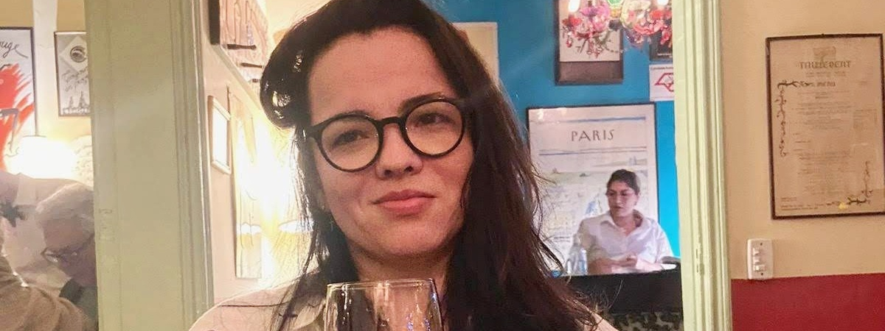

<div class="row align-items-center default-container">
    <div class="col-lg-8">
        <div class="content">
            <div class="content-left">
                <h2 class="default-topic">À propos de moi.</h2>
                <p class="default-p">
                    Je m'appelle Lyons ZANGUIM et j'aime <span class="default-highlight">créer des logiciels à partir d'une
                        idée</span>.
                </p>
                <p>
                    <!--  -->
                </p>
                <p class="default-p">
                    Je suis développeur logiciel originaire du Cameroun. Le portugais est ma langue maternelle, et je parle couramment
                    l'anglais.
                </p>
                <p class="default-p">
                    Mon intérêt pour le développement logiciel professionnel a commencé
                    en 2018, lorsque j'ai dû capturer, nettoyer et analyser des milliers de données pour mon
                    mémoire de Master en économie politique internationale. Il s'est avéré que résoudre un problème
                    par le codage m'a beaucoup appris sur <span class="default-highlight">la programmation,
                    la logique et l'automatisation</span>. L'année suivante, j'étais de retour à l'université pour étudier l'informatique et
                    j'ai décroché mon <span class="default-highlight">premier emploi dans l'industrie technologique</span>.
                </p>
                <p class="default-p">
                    Avance rapide jusqu'à aujourd'hui, et jusqu'à présent, j'ai eu le privilège de travailler avec des personnes formidables dans l'industrie.
                </p>
                <p class="default-p">
                    J'ai eu l'occasion de coder avec <span class="default-highlight">diverses technologies</span> et aussi de développer des <span class="default-highlight">
                        compétences interpersonnelles importantes</span> : j'ai dirigé des changements transformateurs pour améliorer la dynamique d'équipe
                    et la culture organisationnelle au sein d'une entreprise technologique. J'ai acquis des connaissances en codage en travaillant avec des groupes de
                    développeurs et en étudiant la documentation. J'ai gagné de l'expérience en logique de programmation,
                    perfectionné l'artisanat logiciel, <span class="default-highlight">développé des sites Web</span>,
                    <span class="default-highlight">créé des API REST</span>, construit des tableaux de bord visuels,
                    <span class="default-highlight">développé des scrapers et crawlers</span>, et <span class="default-highlight">
                        récupéré et traité des données</span> provenant de diverses sources.
                </p>
                <p>
                    
                </p>
                <p class="default-p">
                    Mais ça, c'est pour le côté professionnel. Sur le plan personnel, d'autres choses à propos de moi incluent : j'ai une passion pour les <span class="default-highlight">
                    documentaires</span>, les <span class="default-highlight">organisations motivées par une mission</span>,
                    le café noir, les histoires captivantes, le <span class="default-highlight">travail en équipe</span>,
                    les <span class="default-highlight">films de science-fiction et de suspense</span> (les meilleurs !),
                    la sauce pesto, Linux, et l'expérience communautaire. Lorsque je voyage, je documente souvent mes
                    <span class="default-highlight">aventures</span> et <span class="default-highlight">expériences</span>
                    pour pouvoir les revisiter plus tard.
                </p>
                <p class="default-p">
                    Je suis en apprentissage continu et je m'adapte aux nouvelles technologies et méthodologies.
                    Mon objectif est de créer des <span class="default-highlight">solutions logicielles efficaces, évolutives et conviviales</span> qui font la différence. Qu'il s'agisse de développement front-end, de services back-end,
                    ou d'applications full-stack, je suis <span class="default-highlight">passionné par chaque aspect
                     du développement logiciel.</span>
                </p>
            </div>
            <div class="content">
                <div class="content-left">
                    <h2 class="default-topic">Contactez-moi.</h2>
                    <p class="default-p">
                        Suivez-moi sur les réseaux sociaux, consultez mon compte Github pour mes projets ou
                        <span class="default-highlight">contactez-moi pour organiser une rencontre</span>.
                        Je serais ravi de découvrir comment mes <span class="default-highlight">compétences en résolution de problèmes</span>
                        peuvent contribuer à <span class="default-highlight">résoudre les défis auxquels vous êtes confronté</span>.
                    </p>
                    <button>
                        <a routerLink="/contact">
                            > Me contacter
                        </a>
                    </button>
                </div>
            </div>
        </div>
    </div>
  </div>
  